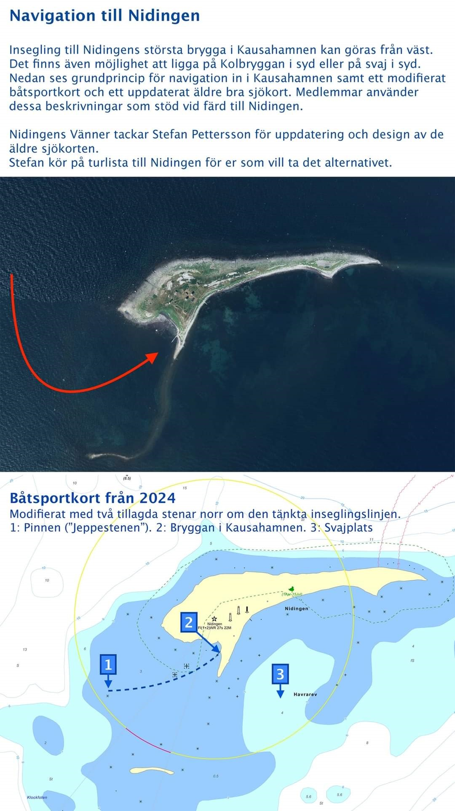

Koordinater, ankringsplatser och praktiska tips för dig som tar dig till Nidingen med segelbåt eller motorbåt.
Nidingen ligger i Kungsbacka skärgård utanför den halländska kusten, ca 8 sjömil sydväst om Göteborg. Ön omges av grunda farvatten och farliga rev – använd alltid aktuellt sjökort och navigera med omsorg.
Utgångspunkten för de flesta besökare är Gottskär, som ligger ca 4 sjömil öster om Nidingen. Från Gottskär är resan ca 45–60 minuter med motorbåt beroende på hastighet och väder.
57.298501, 11.900597
N 57°18.129′ · E 11°54.036′



Nidingen saknar gästhamn. Ankring sker i öppet vatten – kontrollera djup och väderlek noga.
Skyddad ankring på västsidan i lämpliga vindförhållanden. Grunda partier kräver aktsamhet – kontrollera aktuellt sjökort.
Viss skydd vid ostliga vindar. Botten varierar – ta lod och ankra med säker marginal till grunden runt ön.
Det finns ingen gästhamn eller brygga för besökare. Kom förberedd med ankare och dingy för att ta dig i land.
Använd alltid aktuellt sjökort för området kring Nidingen. Farvattnen runt ön är grunda och kräver noggrann navigering.
Kolla SMHI:s väderprognos och vindvarningar innan avfärd. Nidingen har ett utsatt läge – väder kan snabbt förändras.
Ön är fridlyst 1 april–15 juli för att skydda häckande fåglar. Landstigning är då inte tillåten.
Kontakta Johan Elvborn på 0707-99 85 19 eller Destination Gottskär-Nidingen för lokala råd.